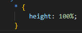

vá no body (style) e coloque "background-image" na configuração de linear gradient e coloque a direção que você quer que va o degrade (exemplo: to right) e depois uma virgula uma cor virgula e outra cor, para deixar um degrade fixo coloque também a tag "background-attachment" no comando fixed (aindo no body)
o "*" no CSS é uma tag global para se colocar altura das coisas e etc
Obs: o atual deste site esta em auto (automatica)
você também pode usar outra tag chamada "radial-gradient" e colocar na tag circle, assim tendo um degrade de circulo